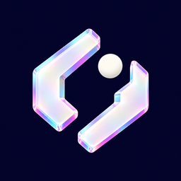

Pick your place.
Search, drop a pin, or return to a favorite. Review your location before starting.

elsepinLOCATION, WITH INTENTION
A new point of view.
Pick a place, plan a route, set your pace.
Make the whole experience feel like you.
Built for iPhone. Designed to feel at home.
Your places.
Your pace. Your palette.
LESS FRICTION. MORE INTENTION.
Useful controls, right where you need them. Space for the map. Room to make it your own.
Search, drop a pin, or return to a favorite. Review your location before starting.
Walk, cycle, or drive a planned route. Choose mph or km/h and set stops from seconds to 24 hours.
Save routes, places, and named areas. Back up your library and review exactly what an import changes.
Follow session status in Live Activities. Optional provider checks show their latest observation and its age.
THE APPEARANCE STUDIO
Nine themes. Thirteen icons.
Pick a starting point, then make it yours.
Citron on deep olive. Bright controls. Solid surfaces.
● Ready · Pin selected
YOUR COLLECTION
Your library, kept together.
MAKE IT YOURS
LOOK & FEEL
HELP & UPDATES
Interactive illustration of the new design.
Map details and system controls vary with iOS.
Prism Jumpgate leads the collection.
Every existing icon is still here.
Prism Jumpgate
YOUR FIRST MOVE
The new design is in development. A download will appear here when a tested release is available.
Read the setup guideSideload the IPA with your preferred signing setup. Keep the companion extension for widgets and Live Activities.
Connect LocalDevVPN, pair your iPhone, and complete the in-app connection check.
Pick a pin or preview a route. Nothing starts moving until you confirm in the app.
A LITTLE CLARITY
No. This website shows an illustration. It does not request your location, connect to your phone, or start a session.
The regular app retains all nine themes and thirteen icon choices. Existing backups remain readable, and imports let you review and select individual changes. Export a backup before changing your installation or signing setup.
It shows the location a connected provider reported and how old that report is. An active local session does not guarantee Apple or Life360 has refreshed its report. Find My Devices and Find My People are different; People support remains experimental and is not a promised working feature.
No background app server runs this site. It is designed for static hosting. Optional cloud location helpers are separate services with their own availability and setup.
The appearance preview stays in this page. There are no accounts, analytics scripts, location requests, or cloud credentials. Your host may retain ordinary request logs. Read the website privacy note.